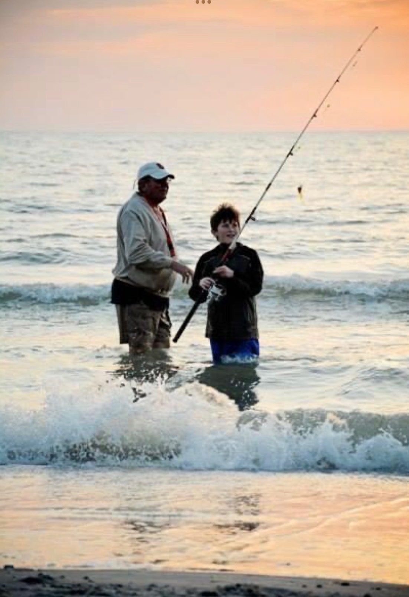
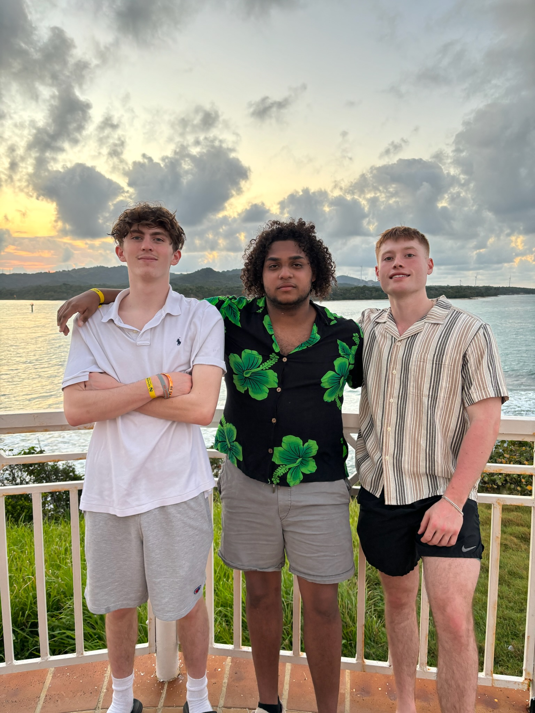

I grew up in Syracuse Ny living with my mom, dad, and younger brother in the Strathmore neighborhood. I have always had an interest in technology and figuring out how different things work so throughout my time in school I took a lot of different technology classes. During my time at Corcoran High School, I decided I wanted to go to SU for Computer science but decided to change to my current major halfway through my 2nd year. Outside of school I enjoy spending time outdoors playing sports or doing activities such as fishing and hunting. I also enjoy hanging out with my friends and have an interest in the stock market.